The feel
1-bit horror has one bit per pixel and two colours, with nothing in between.1 Grey exists only as patterns of differently spaced dots,2 and in Obra Dinn most objects are kept solid black or white because that reads better in 3D.2 The look comes from the black and white Macintosh games of the 1980s1 and from horror manga: for Paweł Koźmiński, 1-bit black and white was the closest he could get to a comic book feel in World of Horror.3
It works because the player has to finish the picture. Pope says the colour missing from old Mac games had to be filled in with your imagination, which to him is "a lot more powerful than actually showing it".2 World of Horror hides parts of its horror in the low resolution of MS Paint, the way Jaws keeps its shark out of sight until the end.3 The abstraction also makes violence bearable: Obra Dinn has you examine gory murder scenes that might be hard to stomach without it.2
- inked
- airless
- obsessive
- stippled
- system-dialog calm
- 3 a.m. in 1984
Where it comes from
Apple's Macintosh arrived in 1984 with a black and white screen and Bill Atkinson's drawing program, MacPaint.4,5 ICOM Simulations built its MacVenture adventures (Déjà Vu, The Uninvited, Shadowgate) around the Mac's new windowing system, and its artists drew them in MacPaint with two "colours", as if in pen and ink.4 Lucas Pope, whose first computer was a Mac Plus, set out to capture the black and white look of old Mac games in a real-time first-person game,6 and released Return of the Obra Dinn in 2018.7 Junji Ito's black and white manga Uzumaki (1998) fills a town with spirals,8 and World of Horror began as a fan work of it: Koźmiński drew the whole game in MS Paint with a mouse, and it was fully released in 2023.9,3
Core elements
One bit per pixel
Every pixel is one of two colours, with no grey between them.1 The MacVenture artists treated those two "colours" like pen and ink,4 and Engadget described World of Horror's 1-bit scenes as a HyperCard application crossed with Junji Ito's complete anthology.3
Greys from dither patterns
Tone comes from patterns of black and white pixels: the denser the black, the darker the grey.2 On the Mac a pattern was an 8 by 8 square of bits that defined a repeating design or tone,10 and Shadowgate's artists filled its rooms with MacPaint's stock patterns, because similar patterns compressed better on a floppy disk.4
One-pixel lines
Pope put legibility above everything else, which meant outlines on the geometry and careful dithering.1 Obra Dinn's lines are exactly one pixel wide,11 and they invert as in the 1987 Mac game The Colony: black where the light falls, white in the dark.2
Large areas of black
Much of the frame is darkness: The Colony began with the lights off, and Obra Dinn is mostly black because it is a dark old ship.2 The fear is in what the dark might hold. Ito is drawn to stories where a fearful unknown is gradually unveiled, and in World of Horror he felt the fear of not knowing what is beyond a door while sensing that something is there.9
Dense line work
On paper the style fills the page. Ito says too much white space feels like slacking off, and that fear is hard to express with empty space; he could no longer draw pictures as labour-intensive as those in Uzumaki.12 The director of the 2024 Uzumaki anime thinks horror needs a different look from ordinary animation, such as more detailed line work.13
Computer window interface
The MacVentures kept the commands of text adventures like Zork but showed them in the Mac's windows, next to first-person pictures of each place.4 World of Horror emulates the look of 1-bit computer games and names the Macintosh II, PC-88 and PC-98 among its inspirations.14
How to do it
Set up a small 1-bit canvas
The Mac Plus screen was 512 by 342 square pixels.1 Obra Dinn first rendered at 640 by 360 with pixel doubling,15 and finally at 800 by 450, which helped legibility without losing the low-res look.16 Playdate, a current 1-bit handheld, has a 400 by 240 screen.17 Work in indexed colour with a black and white (1-bit) palette, which leaves exactly two colours.18
Limit the lighting to three values
Keep the lighting sharp. Pope gave Obra Dinn's lighting only three values, black, 50 per cent and white, and pushed textures towards white.15 Most objects stay solid black or white,2 and he concluded that the most important part of dithering is to use it as little as possible.1
Keep a small pattern set
Make your greys as 8 by 8 tiles of single bits, as the Mac did, and reuse them everywhere.10 Shadowgate's artists were asked to stick to a set of stock patterns so that 50 or 60 rooms would fit on one floppy disk, because similar patterns compress better.4 Tile sizes that are powers of two divide evenly, which makes repeating patterns easy to draw.17
Convert greyscale art to 1-bit
Make your adjustments in greyscale first, since a 1-bit image allows little editing, then convert it with a 50% threshold, a pattern dither or an error-diffusion dither.19 Bill Atkinson's dither, developed at Apple, passes on only six eighths of each pixel's error, which raises the contrast.20 Automatic conversions tend to look noisy, so clean them up by hand.17
Trace the edges in a post-process
A stock edge-detection shader gave Pope missing edges and thick lines, so he coloured each face by its object's position and normal, then drew pixel-perfect lines between the colour areas in a post-process.6 Combined with the lighting, the lines turn white over the dark areas.6,2
Dither in the final pass
Render in 8-bit greyscale and convert to 1-bit in a final pass: a pixel becomes 1 where it is brighter than the matching dot of a tiling dither pattern, and 0 where it is not.16 Error diffusion can't run in a shader,11 so Obra Dinn uses an 8 by 8 Bayer matrix and a 128 by 128 blue noise field.16 To stop the dots swimming, Pope mapped the pattern onto a sphere centred on the player's head, which keeps it still as you turn but not as you walk.16,7
Test at full screen
Play it full screen early: stretched pixels stop fusing into greys and become tiring over long sessions.1 In compressed online video, Bayer dither picked up colour shifts and smearing, while blue noise held up much better at 480p.11 Keep flashes that cover a fifth of the screen to three a second or fewer, and avoid high-contrast stripes that large.21
Cheat sheet
Do
- Put legibility first: outlines on the geometry, and as little dither as you can get away with.1
- Reuse a small set of stock patterns in every scene, as the MacVenture artists did.4
- Make faces readable. Obra Dinn lights every face from below23 and brings you close, because a face needs enough pixels for the dither to work.2
- Clean up converted or transformed art by hand.17
- Unveil the monster a little at a time. That slow progression is what draws Ito in.9
Avoid
- Dithering a full-colour render straight to 1-bit. Pope traced edges instead, and machine-dithered images come out fuzzy and noisy.6,17
- A dither pattern fixed to the screen while the camera moves: the dots swim and flicker.16 In 2D, scrolling a 2 by 2 checker one pixel at a time flips every pixel.17
- Testing only in a small window. Obra Dinn looked fine there, but at full screen it was too uncomfortable to play for long until Pope reworked it.1
- Uneven scaling and trusting video. Bayer patterns mosaic when shrunk with nearest-neighbour scaling,11 and compression blurs the dots and adds greys.2
- Spelling out the monster. World of Horror leaves parts of its horror to the low resolution.3
Tools and tutorials
- Ditherpunk
Surma's walk through Bayer, blue noise and error diffusion, written after playing Obra Dinn.20
- Atkinson dithering
The dither used for a lot of Mac Plus imagery.11
- Return of the Obra Dinn devlog
Lucas Pope's own record of making a 1-bit 3D game.6
- Surface-Stable Fractal Dithering
Dither dots that stick to 3D surfaces yet keep a steady size on screen, inspired by Obra Dinn.7
- Aseprite
A pixel editor. Work in Indexed mode with a two-colour palette.
- Playdate SDK
A current handheld with a 400 by 240 1-bit screen. Its design guide covers dither and flashing.17
- Photoshop: Convert an image to Bitmap mode
Adobe's guide to 1-bit conversion with a threshold, pattern dither or diffusion dither.19
- GIMP: Indexed mode
Convert to indexed colour with the black and white (1-bit) palette.18
Palette
Three pairs, sampled from the games. Use one pair at a time: a 1-bit image has exactly two colours, and the only choice is which two. The first pair is the Macintosh screen and Ito's printed page.
Feel the vibe
In motion
Listen
By Colin Stetson, who scored the black and white 2024 Uzumaki anime and turned out to be a fan of Ito and Uzumaki.13
YouTubeOne of World of Horror's two composers. He wrote long pieces that loop endlessly, and finds that repetition alone can become uncomfortable.24
YouTubeFrom Return of the Obra Dinn. Pope composed the music and sound himself, as on his other games.6
YouTubeOn the Mac, Shadowgate had no music beyond the credits. The NES port was the first MacVenture with a soundtrack.4
YouTube1-bit in the literal sense: the ZX Spectrum's beeper was either fully driven or at rest, and Follin pushed it to five channels in Agent X.25
YouTube
More references
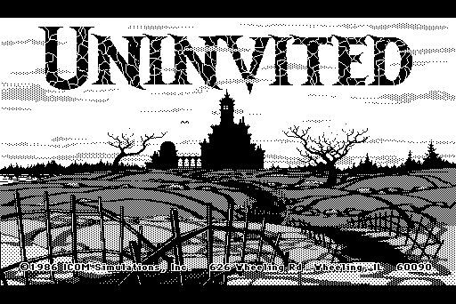
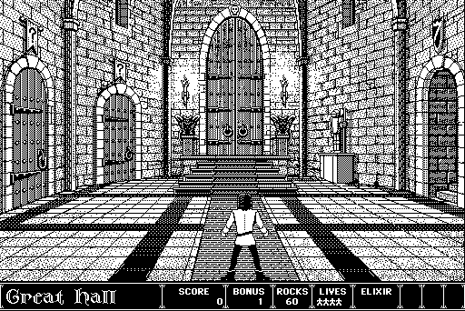
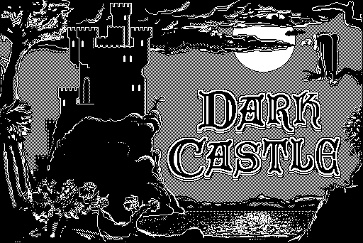
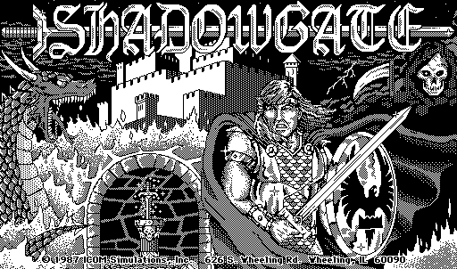
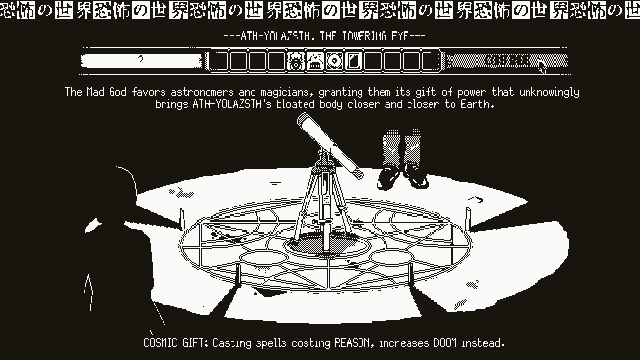
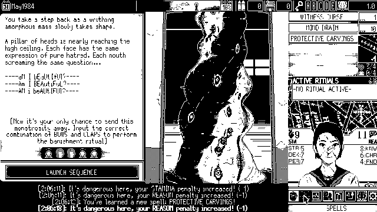
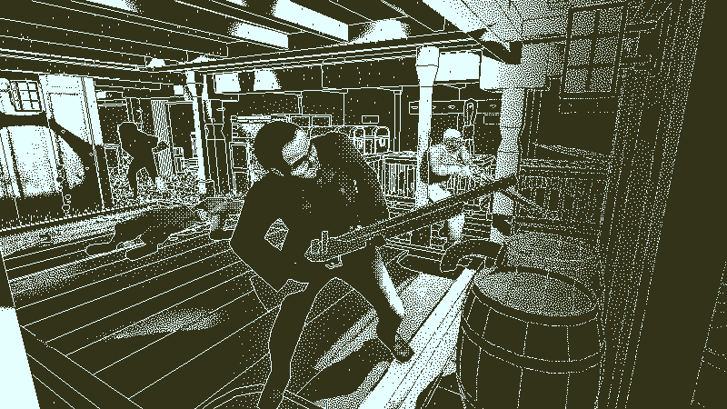
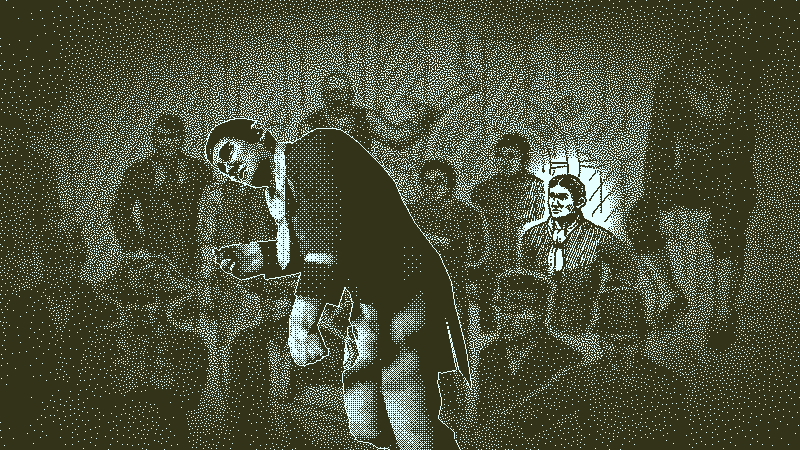
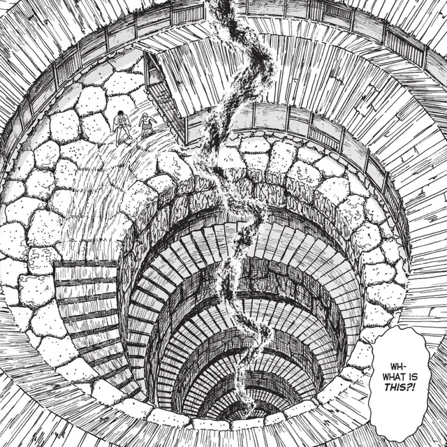
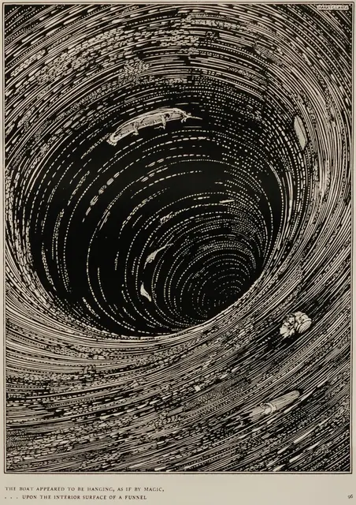
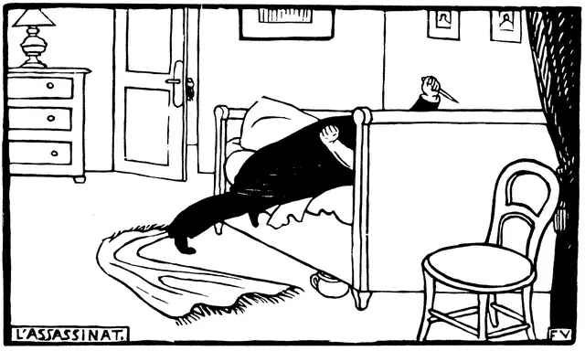
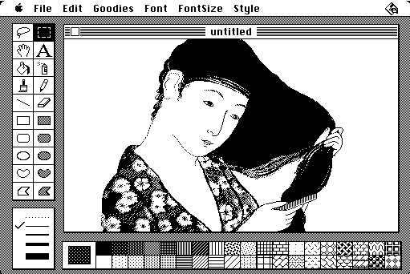
Games
- Uninvited
A MacVenture. Study how the Mac's windows show the commands and frame each room.4
- Dark Castle
Pope's example of a Mac game that stayed legible in black and white, and looked worse once ported to colour.2
- Shadowgate
Drawn in MacPaint, leaning on its stock patterns to fit 50 or 60 rooms on one floppy disk.4
- Déjà Vu
In development when the Mac was revealed. ICOM built its adventure engine around the new windows.4
- Return of the Obra Dinn
First-person 3D in 1-bit, made to look like the Mac Plus games its creator grew up with.1
- World of Horror
Drawn in MS Paint with a mouse, as a love letter to 1980s and 90s horror.9
- Who's Lila?
Its makers call it a gritty dither-punk world. Set it beside Obra Dinn.26
Film, art and more
- Uzumaki
Ito's town overrun by spirals. The 2024 anime kept it black and white.8
- Tales of Mystery and Imagination
Harry Clarke's 24 monochrome Poe illustrations, set against solid voids of black.27
- Félix Vallotton
Woodcuts that took ideas from Japanese prints but kept to black and white.28
- MacPaint
Fat Bits for editing single pixels, and a paint bucket that fills shapes with a pattern.5
- Susan Kare
Drew the first Mac icons on a 32 by 32 grid and designed Chicago, the system font.22
- Escape the Dark Castle
Large card illustrations in a dark, black and white design that hearkens to heavy metal and classic horror.29
Sources
- 1Return of the Obra Dinn – Adventures in One Bit, Out Tomorrow
- 2Lucas Pope and the rise of the 1-bit 'dither-punk' aesthetic
- 3A dentist made a game in MS Paint and it's terrifying
- 4Shadowgate Blog #1 - The Story of the MacVentures, Shadowgate and its Re-imagining
- 5MacPaint and QuickDraw Source Code
- 6Return of the Obra Dinn devlog, May 2014: 1-bit rendering
- 7Surface-Stable Fractal Dithering
- 8Uzumaki: Why Spirals Terrify Junji Ito
- 9Ito Junji interview featuring the developer of WORLD OF HORROR
- 10Inside Macintosh: Imaging With QuickDraw, Resources
- 11Return of the Obra Dinn devlog, July 2014: dither upgrade
- 12A Special Talk With Masters of Horror, Junji Ito and Akiko Hatsu!
- 13Director Hiroshi Nagahama, From Wicked City to Uzumaki
- 14How 'World of Horror' Captures Junji Ito's Brand of Cosmic Horror in Video Game Form
- 15Return of the Obra Dinn devlog, June 2014: rendering
- 16Return of the Obra Dinn devlog, November 2017: fullscreen, round 3
- 17Designing for Playdate
- 18Indexed mode
- 19Convert an image to Bitmap mode
- 20Ditherpunk: The article I wish I had about monochrome image dithering
- 21Xbox Accessibility Guideline 118: Photosensitivity
- 22How Susan Kare Designed User-Friendly Icons for the First Macintosh
- 23Lucas Pope on the challenge of creating Obra Dinn's 1-bit aesthetic
- 24Interview: The Sound of World of Horror
- 25The Sound of 1-bit: Technical Constraint and Musical Creativity on the 48k Sinclair ZX Spectrum
- 26Who's Lila? on Steam
- 27Harry Clarke's Illustrations for Poe's Tales of Mystery and Imagination (1919)
- 28Laziness (La paresse), Félix Vallotton
- 29'Escape the Dark Castle' Delivers a Light RPG Experience in 15 Minutes